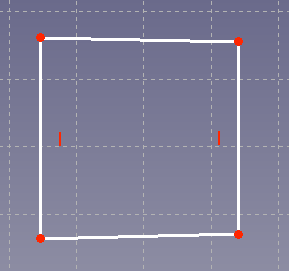
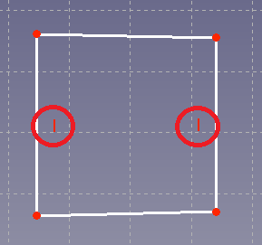
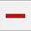
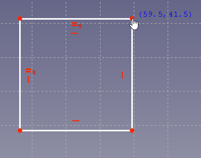
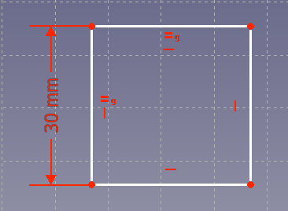
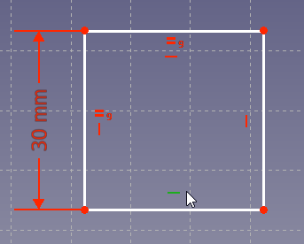
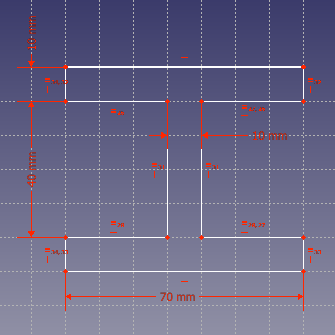
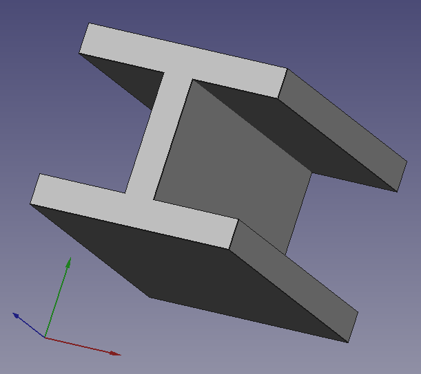

15. Constrained sketches¶
In this practice we are going to create sketches with restrictions to form figures with greater accuracy and with more facilities.
Open the FreeCAD application and click on the icon to create a new document .
We select the Part Design workbench

Next we select to create a new sketch.

And we choose the XY plane as the base plane to place the new sketch.

A grid will appear on the screen where you can draw in two dimensions.

Next we are going to draw a simple object, a square, with the icon polyline
 .
.
Now we are not going to worry about the accuracy of the square because by drawing with the mouse it is impossible to get a perfect square.
With the above method, we can create a drawing similar to a square, but when creating figures with the mouse the result will always have errors.
To get our square to be perfect we are going to create restrictions in the lines that form it.
First we select the two vertical lines and create a vertical constraint by clicking .
The lines will become perfectly vertical and two small icons will appear representing the vertical constraint.
Next we select the two horizontal lines to create a horizontal constraint by clicking .

Now our drawing looks a lot more like a perfect square, but we're not done yet.
At this point we are going to make a vertical side the same size as a horizontal side, as befits a square.
We select a vertical side and a horizontal side and create an equality constraint by clicking
 .
.
Now our figure is a perfect square. If we move a point of the square, it will keep the proportions.
To finish we are going to give an exact size to the square. First we select a vertical line and then we create a vertical dimension constraint by clicking
 , with the value of 30 millimeters.
, with the value of 30 millimeters.Once the dimension is created, we can double click on it to edit it and change its value.
Next we are going to remove a constraint.
Click on the horizontal restriction icon on the bottom line, this icon will change to green.
We press the delete key
Delon the keyboard and the constraint disappears, so we can move the bottom line and change its slant.
Exercises¶
Create a sketch like the one in the image.
With the following restrictions.
- Horizontal constraint on all horizontal lines.
- Vertical constraint on all vertical lines.
- Equality constraint on all lines of equal length.
- Dimension constraint in the four dimensions that appear in the drawing.
Extrude the drawing 100 millimeters to generate an H-beam.

Video-tutorial¶
Video: Applying constraints.